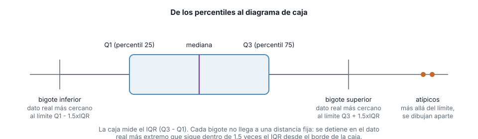
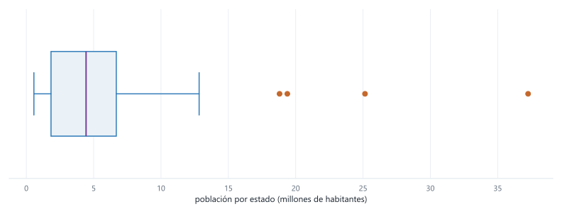
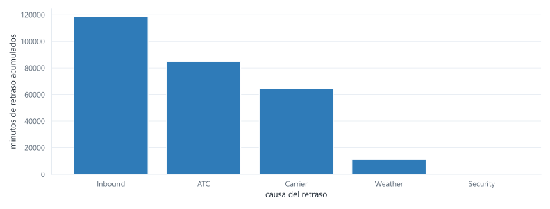
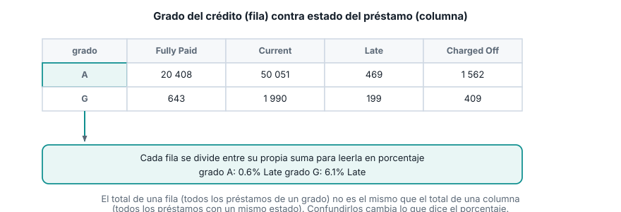
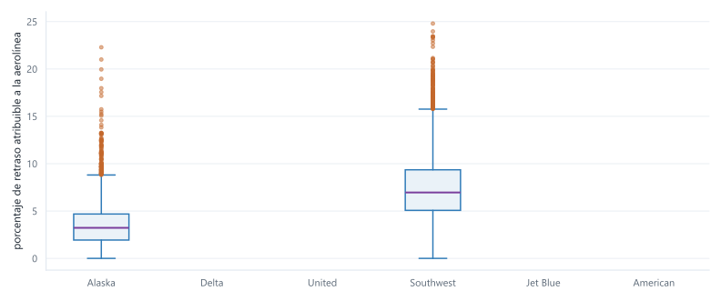

Semana 4. Boxplot, cuantiles y variables categóricas
| Módulo | Estadística para Analítica |
| Programa | Especialización en Big Data |
| Unidad | Unidad 1. Análisis descriptivo y exploratorio de datos |
Abrir la presentación de la sesión
1 De qué va esta semana
Seguimos con el capítulo 1 de Estadística práctica para ciencia de datos con R y Python (Bruce, Bruce y Gedeck, 2.ª edición), la misma fuente de la semana pasada. Esta semana cierra la caja de herramientas para variables numéricas con los percentiles y el diagrama de caja (boxplot), y abre la caja de herramientas para variables categóricas: gráficos de barras y tablas de contingencia.
La media, la mediana y la desviación estándar que calculaste la semana pasada resumen una variable en un solo número. El boxplot va un paso más allá: resume la distribución completa en cinco puntos de referencia (el mínimo dentro de rango, el percentil 25, la mediana, el percentil 75 y el máximo dentro de rango) y señala aparte los valores atípicos. Es la herramienta que vas a usar todas las semanas de aquí en adelante para comparar la distribución de una variable numérica entre varios grupos de un vistazo, algo que un histograma por grupo hace mucho más difícil de leer.
Las variables categóricas no tienen media ni mediana: no puedes promediar “preventiva” y “correctiva”. Lo que sí puedes hacer es contar cuántas veces aparece cada categoría, y esa cuenta es la base de un gráfico de barras cuando hay una sola variable categórica, y de una tabla de contingencia cuando quieres cruzar dos.
El dataset guía sigue siendo state.csv, ya cargado la semana pasada. Para gráficos de barras y tablas de contingencia usas dos datasets nuevos del mismo repositorio del libro: los minutos de retraso acumulados por causa en el aeropuerto de Dallas-Fort Worth, y el historial de 450 961 préstamos de Lending Club con su calificación de riesgo y su estado de pago. Cierras con un caso integrador sobre los retrasos de seis aerolíneas, comparando boxplots agrupados por categoría.
Al terminar deberías poder:
- Calcular percentiles con pandas e interpretar qué fracción de los datos queda por debajo y por encima de cada uno.
- Construir un diagrama de caja a partir de percentiles y el IQR, explicar la regla que fija dónde termina cada bigote, e identificar valores atípicos con esa misma regla.
- Construir un gráfico de barras para una variable categórica, distinguirlo de un histograma, y explicar por qué un gráfico circular casi nunca es la mejor opción.
- Construir una tabla de contingencia entre dos variables categóricas con
pd.crosstab, calcular porcentajes por fila, e interpretar el hallazgo que resulta. - Comparar la distribución de una variable numérica entre varias categorías con un boxplot agrupado, e identificar cuándo dos grupos no se superponen.
2 Recapitulación breve
state ya está en memoria desde la semana pasada. Si arrancas una sesión nueva, esta línea la recupera:
import pandas as pd
url = "https://raw.githubusercontent.com/gedeck/practical-statistics-for-data-scientists/master/data/state.csv"
state = pd.read_csv(url)Recuerda las dos columnas numéricas: Population (población de cada uno de los 50 estados, censo 2010) y Murder.Rate (tasa de homicidios por cada 100 000 habitantes). Vas a trabajar Population conmigo y Murder.Rate por tu cuenta, igual que la semana pasada.
3 Percentiles
El percentil \(P\) de una variable es el valor tal que aproximadamente el \(P\)% de los datos queda por debajo de él. Los cuartiles son los percentiles 25, 50 y 75; el percentil 50 es la mediana que ya conoces.
Para calcularlo por interpolación lineal sobre la lista ordenada \(x_{(1)}, x_{(2)}, \ldots, x_{(n)}\), se ubica primero una posición continua \(pos = P \times (n - 1)\), y se interpola entre los dos datos reales que rodean esa posición:
\[ \text{percentil}(P) = x_{(\lfloor pos \rfloor)} + \left(pos - \lfloor pos \rfloor\right) \times \left(x_{(\lfloor pos \rfloor + 1)} - x_{(\lfloor pos \rfloor)}\right) \]
Cuando \(pos\) cae exactamente sobre un dato (por ejemplo, si \(P \times (n-1)\) da un entero), el percentil es ese dato tal cual: la parte fraccionaria de la interpolación es cero.
percentiles = state["Population"].quantile([0.25, 0.5, 0.75])
print(percentiles)0.25 1833004.25
0.50 4436369.50
0.75 6680312.25
Name: Population, dtype: float64.quantile() acepta un valor entre 0 y 1 (no entre 0 y 100) y usa exactamente esta interpolación por defecto. El percentil 0.5 coincide con la mediana que calculaste la semana pasada (4 436 369.5): son la misma medida, calculada con dos funciones distintas.
El percentil 25 (1 833 004) dice que una cuarta parte de los 50 estados tiene menos de 1.83 millones de habitantes. El percentil 75 (6 680 312) dice que tres cuartas partes de los estados tienen menos de 6.68 millones, o, dicho al revés, que solo una cuarta parte supera esa cifra. Entre esos dos valores queda el 50% central de los estados: ni los más chicos ni los más grandes, el grupo de en medio.
4 El diagrama de caja (boxplot)
El diagrama de caja, propuesto por el estadístico John Tukey en 1977, resume una variable numérica completa en cinco puntos de referencia, calculados a partir de los percentiles que acabas de ver.

La caja va del percentil 25 (Q1) al percentil 75 (Q3), con una línea marcando la mediana adentro. El ancho de la caja es exactamente el IQR que calculaste la semana pasada:
\[ \text{IQR} = Q_3 - Q_1 \]
Los bigotes son la parte que más se presta a confusión. No se extienden una distancia fija de 1.5 veces el IQR: se extienden hasta el dato real más alejado que sigue dentro de ese límite. El límite se calcula así:
\[ \text{límite inferior} = Q_1 - 1.5 \times \text{IQR} \qquad\qquad \text{límite superior} = Q_3 + 1.5 \times \text{IQR} \]
Cualquier dato entre esos dos límites queda cubierto por un bigote, hasta el más extremo de ellos. Cualquier dato fuera de ese rango se dibuja aparte, como un punto individual: es un valor atípico según esta regla. Matplotlib construye sus boxplots con esta misma convención.
q1 = state["Population"].quantile(0.25)
q3 = state["Population"].quantile(0.75)
iqr = q3 - q1
limite_inferior = q1 - 1.5 * iqr
limite_superior = q3 + 1.5 * iqr
print("Q1:", q1)
print("Q3:", q3)
print("IQR:", iqr)
print("limite inferior:", limite_inferior)
print("limite superior:", limite_superior)
atipicos = state[(state["Population"] < limite_inferior) | (state["Population"] > limite_superior)]
print(atipicos[["State", "Population"]].sort_values("Population", ascending=False))Q1: 1833004.25
Q3: 6680312.25
IQR: 4847308.0
limite inferior: -5437957.75
limite superior: 13951274.25
State Population
4 California 37253956
42 Texas 25145561
31 New York 19378102
8 Florida 18801310El IQR de Population es 4 847 308: exactamente el mismo número que calculaste la semana pasada con .quantile(0.75) - .quantile(0.25). El límite inferior sale negativo, así que ningún estado puede quedar fuera por abajo (la población no puede ser negativa); el bigote inferior llega hasta Wyoming, el estado con menos habitantes. Por arriba, cuatro estados superan el límite de 13 951 274 y quedan marcados como atípicos: California, Texas, Nueva York y Florida. Son los mismos cuatro estados que más alejaban la media de la mediana la semana pasada.
import matplotlib.pyplot as plt
fig, ax = plt.subplots(figsize=(11, 4.2))
ax.boxplot(state["Population"] / 1_000_000, vert=False)
ax.set_xlabel("población por estado (millones de habitantes)")
plt.show()
La caja, angosta y pegada a la izquierda del gráfico, dice que la mayoría de los estados tiene una población relativamente baja y parecida entre sí. Los cuatro puntos sueltos a la derecha no son ruido ni un error de los datos: son estados reales, mucho más poblados que el resto, y el boxplot los separa visualmente en vez de dejar que estiren la escala del gráfico entero, como pasaría con un histograma de pocos contenedores.
Murder.Rate
Calcula los percentiles 25, 50 y 75 de Murder.Rate, el IQR, los límites del boxplot y los valores atípicos que resulten. Antes de correr el código, piensa: la semana pasada viste que Murder.Rate no tenía un atípico tan marcado como California. ¿Esperas cero atípicos, uno, o varios?
percentiles_mr = state["Murder.Rate"].quantile([0.25, 0.5, 0.75])
print(percentiles_mr)
q1_mr = state["Murder.Rate"].quantile(0.25)
q3_mr = state["Murder.Rate"].quantile(0.75)
iqr_mr = q3_mr - q1_mr
limite_inf_mr = q1_mr - 1.5 * iqr_mr
limite_sup_mr = q3_mr + 1.5 * iqr_mr
print("IQR:", iqr_mr)
print("limite inferior:", limite_inf_mr)
print("limite superior:", limite_sup_mr)
atipicos_mr = state[(state["Murder.Rate"] < limite_inf_mr) | (state["Murder.Rate"] > limite_sup_mr)]
print(atipicos_mr[["State", "Murder.Rate"]])0.25 2.425
0.50 4.000
0.75 5.550
Name: Murder.Rate, dtype: float64
IQR: 3.125
limite inferior: -2.2625
limite superior: 10.2375
State Murder.Rate
17 Louisiana 10.3Un único atípico: Louisiana, con una tasa de 10.3, apenas por encima del límite superior de 10.24. Es coherente con lo que ya sabías: Murder.Rate tiene sesgo a la derecha, pero mucho más leve que Population, así que el boxplot marca un solo estado en el límite en vez de un grupo de cuatro muy por encima del resto.
5 Variables categóricas: moda y gráficos de barras
Una variable categórica no tiene percentiles ni boxplot: no hay un orden numérico entre “tormenta” y “falla mecánica” como causas de un retraso. Lo único que se puede hacer es contar cuántas veces aparece cada categoría. El valor con el conteo más alto es la moda, y esa cuenta, graficada, es un gráfico de barras.
El dataset de esta sección resume los minutos de retraso acumulados en el aeropuerto de Dallas-Fort Worth, agrupados por causa: problema del transportista (Carrier), control de tráfico aéreo (ATC), clima (Weather), seguridad (Security) y vuelo entrante retrasado (Inbound). Es una sola fila con una columna por causa; para tratarla como una variable categórica hay que transponerla.
url_dfw = "https://raw.githubusercontent.com/gedeck/practical-statistics-for-data-scientists/master/data/dfw_airline.csv"
dfw = pd.read_csv(url_dfw)
print(dfw)
causas = dfw.transpose()
causas.columns = ["minutos"]
causas["porcentaje"] = (causas["minutos"] / causas["minutos"].sum() * 100).round(1)
print(causas.sort_values("minutos", ascending=False)) Carrier ATC Weather Security Inbound
0 64263.16 84856.5 11235.42 343.15 118427.82
minutos porcentaje
Inbound 118427.82 42.4
ATC 84856.50 30.4
Carrier 64263.16 23.0
Weather 11235.42 4.0
Security 343.15 0.1fig, ax = plt.subplots(figsize=(11, 4.2))
ax.bar(causas.index, causas["minutos"])
ax.set_xlabel("causa del retraso")
ax.set_ylabel("minutos de retraso acumulados")
plt.show()
La categoría más frecuente (la moda) es “Inbound”: el 42.4% de los minutos de retraso vienen de vuelos que ya llegaban tarde desde otro aeropuerto, no de un problema en Dallas-Fort Worth mismo. Junto con el control de tráfico aéreo (30.4%), estas dos causas explican más del 70% del retraso total. La seguridad, en cambio, es prácticamente irrelevante (0.1%): en un análisis real, ahí no vale la pena invertir esfuerzo de mejora.
Gráfico de barras contra histograma. Los dos se parecen (barras verticales sobre un eje), y por eso se confunden. La diferencia está en el eje horizontal: en un histograma, el eje es numérico y continuo, y las barras van pegadas unas a otras porque representan contenedores que cubren todo el rango sin huecos. En un gráfico de barras, el eje muestra categorías sin orden numérico, y las barras van separadas porque no hay continuidad entre “clima” y “seguridad”: podrías reordenarlas sin que el gráfico pierda sentido, algo que no puedes hacer con los contenedores de un histograma.
Por qué no un gráfico circular (de pastel). Es una alternativa común para mostrar proporciones entre categorías, pero el ojo humano compara longitudes y posiciones mucho mejor de lo que compara ángulos y áreas. Con más de dos o tres categorías, un gráfico circular hace difícil saber cuál porción es más grande sin leer las etiquetas de porcentaje una por una; un gráfico de barras ordenado de mayor a menor responde esa pregunta con una mirada.
6 Tablas de contingencia
Cuando quieres cruzar dos variables categóricas (no resumir una sola), la herramienta es la tabla de contingencia: un recuento de cuántas observaciones caen en cada combinación posible de las dos variables.
El dataset de esta sección trae 450 961 préstamos de Lending Club, cada uno con su calificación de riesgo (grade, de A a G, siendo A la más segura) y su estado (status: pagado por completo, vigente, atrasado o cancelado por incumplimiento).
url_lc = "https://raw.githubusercontent.com/gedeck/practical-statistics-for-data-scientists/master/data/lc_loans.csv"
lc = pd.read_csv(url_lc)
print(lc.shape)
print(lc.head())(450961, 2)
status grade
0 Fully Paid B
1 Charged Off C
2 Fully Paid C
3 Fully Paid C
4 Current Bpd.crosstab construye la tabla de contingencia: una fila por cada valor de grade, una columna por cada valor de status, y en cada celda el conteo de préstamos con esa combinación exacta.
tabla = pd.crosstab(lc["grade"], lc["status"])
print(tabla)status Charged Off Current Fully Paid Late
grade
A 1562 50051 20408 469
B 5302 93852 31160 2056
C 6023 88928 23147 2777
D 5007 53281 13681 2308
E 2842 24639 5949 1374
F 1526 8444 2328 606
G 409 1990 643 199Con margins=True se agregan la suma de cada fila y de cada columna, para verificar que los conteos cuadran con el total del dataset:
tabla_con_margen = pd.crosstab(lc["grade"], lc["status"], margins=True)
print(tabla_con_margen)status Charged Off Current Fully Paid Late All
grade
A 1562 50051 20408 469 72490
B 5302 93852 31160 2056 132370
C 6023 88928 23147 2777 120875
D 5007 53281 13681 2308 74277
E 2842 24639 5949 1374 34804
F 1526 8444 2328 606 12904
G 409 1990 643 199 3241
All 22671 321185 97316 9789 450961Los conteos por sí solos no responden la pregunta que más importa: ¿la calificación de riesgo predice el resultado del préstamo? Para verlo hay que convertir cada fila a porcentaje, dividiendo entre el total de esa fila (no entre el total de la tabla).
porcentaje_fila = (tabla.div(tabla.sum(axis=1), axis=0) * 100).round(1)
print(porcentaje_fila)status Charged Off Current Fully Paid Late
grade
A 2.2 69.0 28.2 0.6
B 4.0 70.9 23.5 1.6
C 5.0 73.6 19.1 2.3
D 6.7 71.7 18.4 3.1
E 8.2 70.8 17.1 3.9
F 11.8 65.4 18.0 4.7
G 12.6 61.4 19.8 6.1
El patrón es consistente en las cuatro columnas: a medida que la calificación baja de A a G, el porcentaje de préstamos atrasados (Late) sube de 0.6% a 6.1%, y el porcentaje cancelado por incumplimiento (Charged Off) sube de 2.2% a 12.6%. Al mismo tiempo, el porcentaje pagado por completo baja de 28.2% a 19.8%. La calificación de riesgo, calculada antes de que el préstamo se otorgue, sí anticipa cómo termina: es la evidencia de que el sistema de calificación está haciendo su trabajo, no un adorno del reporte.
Calcula, solo para los préstamos con la calificación más baja que aparece en los datos, qué porcentaje tiene estado Late. Verifica que coincide con la fila correspondiente de la tabla de porcentajes que ya calculaste.
grado_mas_bajo = lc[lc["grade"] == "G"]
print(len(grado_mas_bajo))
porcentaje_late = (grado_mas_bajo["status"] == "Late").mean() * 100
print(round(porcentaje_late, 1))3241
6.13241 préstamos tienen calificación G, la más baja del dataset. De esos, 6.1% están en Late, exactamente el mismo número que aparece en la última fila de porcentaje_fila. Calcularlo de las dos formas (filtrando y promediando una condición booleana, o leyendo la tabla ya armada) sirve para confirmar que entiendes de dónde sale cada celda de la tabla de contingencia, no solo para leerla.
7 Caso integrador: retrasos por aerolínea
Para cerrar, comparas la distribución de una variable numérica entre varias categorías: el porcentaje de minutos de retraso atribuible directamente a la aerolínea (pct_carrier_delay), para 33 468 vuelos de seis aerolíneas distintas. Un boxplot agrupado pone un boxplot por categoría, uno al lado del otro, sobre el mismo eje.
url_air = "https://raw.githubusercontent.com/gedeck/practical-statistics-for-data-scientists/master/data/airline_stats.csv"
air = pd.read_csv(url_air)
print(air.shape)
print(air["airline"].unique())
resumen = air.groupby("airline")["pct_carrier_delay"].agg(
["median", lambda s: s.quantile(0.25), lambda s: s.quantile(0.75)]
)
resumen.columns = ["mediana", "Q1", "Q3"]
print(resumen.sort_values("mediana").round(2))(33468, 4)
['American' 'Alaska' 'Jet Blue' 'Delta' 'United' 'Southwest']
mediana Q1 Q3
airline
Alaska 3.23 1.94 4.69
Delta 5.55 3.81 7.82
United 6.45 4.03 9.63
Southwest 6.96 5.07 9.35
Jet Blue 7.66 5.34 10.28
American 8.43 6.34 10.99air.boxplot(column="pct_carrier_delay", by="airline", figsize=(11, 4.6))
plt.show()
Compara el cuartil 75 (Q3) de Alaska con el cuartil 25 (Q1) de American en la tabla de arriba. ¿Qué significa, en términos del boxplot, que uno sea menor que el otro? Redacta la conclusión en dos o tres oraciones, como si se la entregaras a un gerente de operaciones que decide con qué aerolíneas mantener un acuerdo de nivel de servicio.
El Q3 de Alaska es 4.69 y el Q1 de American es 6.34: el 75% de los vuelos de Alaska con más retraso atribuible a la aerolínea todavía queda por debajo del 25% de los vuelos de American con menos retraso. Dicho con el boxplot: la caja completa de Alaska queda por debajo de la caja completa de American, sin superposición entre ellas. No es un caso aislado ni una diferencia de un par de vuelos: es una diferencia sistemática entre las dos aerolíneas en la variable medida, visible de un vistazo en el gráfico sin necesidad de leer una sola tabla de números.
8 Ejercicio final: constrúyelo tú, de principio a fin
Todo lo anterior te dio el dataset, las preguntas y hasta la solución. Este último ejercicio no trae nada de eso: te toca buscar los datos, decidir qué preguntar y justificar cada respuesta con lo que aprendiste esta semana. No tiene solución en esta guía y no se evalúa, pero tráelo resuelto (o avanzado) a la próxima sesión.
Paso 1. Consigue un dataset con al menos una variable numérica y una categórica
Elige uno de estos dos caminos.
Camino A: el dataset de respaldo del libro, ya usado la semana pasada: kc_tax.csv.gz, con el valor catastral, el área construida y el código postal de casi 500 000 viviendas del condado de King. ZipCode es la variable categórica (aunque se vea como número, no tiene sentido promediarlo); TaxAssessedValue o SqFtTotLiving son las numéricas.
kc_tax = pd.read_csv(
"https://raw.githubusercontent.com/gedeck/practical-statistics-for-data-scientists/master/data/kc_tax.csv.gz",
compression="gzip",
)
print(kc_tax.shape)
print(kc_tax.head())Camino B: un dataset que tú busques, en datos.gov.co, el portal de datos abiertos del Banco Mundial, Kaggle o el UCI Machine Learning Repository. Debe tener al menos una variable numérica y una categórica con pocas categorías (menos de 10, para que el boxplot agrupado o el gráfico de barras sean legibles).
Paso 2. Formula tus propias preguntas
Escribe al menos dos preguntas: una que se responda con un boxplot o percentiles de una variable numérica (¿hay atípicos? ¿cuál es el rango del 50% central?), y otra que se responda con un gráfico de barras o una tabla de contingencia de una o dos variables categóricas (¿qué categoría es más frecuente? ¿la distribución de la variable numérica cambia según la categoría?).
Paso 3. Responde y justifica cada una
Para cada pregunta, calcula la medida o el gráfico que la responde, y redacta la conclusión en dos o tres oraciones, en el mismo tono ejecutivo del caso de las aerolíneas: qué significa para alguien que va a decidir con ese resultado, no solo el número o el gráfico en sí.
Paso 4. Si tienes una variable numérica y una categórica juntas, crúzalas
Construye un boxplot agrupado (como el de las aerolíneas) o, si tus dos variables son ambas categóricas, una tabla de contingencia con porcentajes por fila. Interpreta si hay una diferencia sistemática entre los grupos o si se superponen sin un patrón claro.
Revisa que tu trabajo cumpla las tres condiciones que pide el módulo para cualquier entrega: reproducible, trazable y ejecutiva (ver la presentación del módulo).
9 Errores frecuentes
Error 1
Confundir un gráfico de barras con un histograma
Causa. Los dos son barras verticales sobre un eje, y con pocas categorías o pocos contenedores se ven parecidos a simple vista.
Solución. Pregúntate qué representa el eje horizontal. Si son categorías sin orden numérico (causas de retraso, tipos de intervención), es un gráfico de barras, y las barras van separadas. Si es un rango numérico dividido en contenedores contiguos, es un histograma, y las barras van pegadas.
Error 2
Asumir que el bigote del boxplot está siempre a 1.5 veces el IQR
Causa. La fórmula del límite (\(Q_3 + 1.5 \times \text{IQR}\)) es fácil de recordar mal como “el bigote llega hasta ahí”, cuando en realidad ese número es solo un límite, no la posición real del bigote.
Solución. El bigote termina en el dato real más extremo que sigue dentro de ese límite, no en el límite mismo. Con Population, el límite superior es 13 951 274, pero el bigote real llega solo hasta Illinois, con 12 830 632 habitantes: el siguiente dato (California) ya está fuera del límite, así que se dibuja aparte como atípico, y el bigote se queda en el último dato real que sí calificó.
Error 3
Leer un porcentaje de una tabla de contingencia sin saber sobre qué se calculó
Causa. Una tabla de contingencia admite porcentajes por fila, por columna o sobre el total, y dan números distintos. Leer “12.6%” sin saber cuál de los tres es la tabla lleva a una conclusión equivocada.
Solución. Antes de interpretar un porcentaje, identifica el denominador. En esta guía, “12.6% de Charged Off en el grado G” significa 12.6% de los préstamos del grado G (porcentaje por fila), no 12.6% de todos los préstamos cancelados del dataset ni 12.6% de todo el dataset completo. Cambiar el eje de la división cambia lo que dice el número.
10 Lista de chequeo de la semana
Antes de la próxima sesión
11 Lo que viene
- Semana 5. Vas a explorar relaciones entre dos variables numéricas con gráficos de dispersión, y relaciones condicionadas a una tercera variable con gráficos condicionales. Cierras la Unidad 1 con un informe exploratorio completo (30% de la nota).
- Semana 6. Empieza la Unidad 2: variables aleatorias, espacio muestral y función de distribución.
12 Recursos
- Bruce, P., Bruce, A. y Gedeck, P. Estadística práctica para ciencia de datos con R y Python. 2.ª edición, MARCOMBO, 2022. Capítulo 1: “Análisis exploratorio de datos”. Fuente de esta guía.
- Datasets de esta guía, del repositorio de datos del libro:
state.csv,dfw_airline.csv,lc_loans.csvyairline_stats.csv - Documentación de
pandas.DataFrame.quantile: pandas.pydata.org/docs/reference/api/pandas.DataFrame.quantile.html - Documentación de
pandas.crosstab: pandas.pydata.org/docs/reference/api/pandas.crosstab.html
Estadística para Analítica. Institución Universitaria Pascual Bravo. Facultad de Ingeniería. Semestre 2026-02.
Transparencia. La redacción de esta guía contó con el apoyo de inteligencia artificial, usando el modelo Claude Opus 5 de Anthropic. Todo el contenido fue revisado y validado. Las salidas de terminal y los gráficos son reales, producidos al ejecutar estos mismos programas durante la preparación del material.